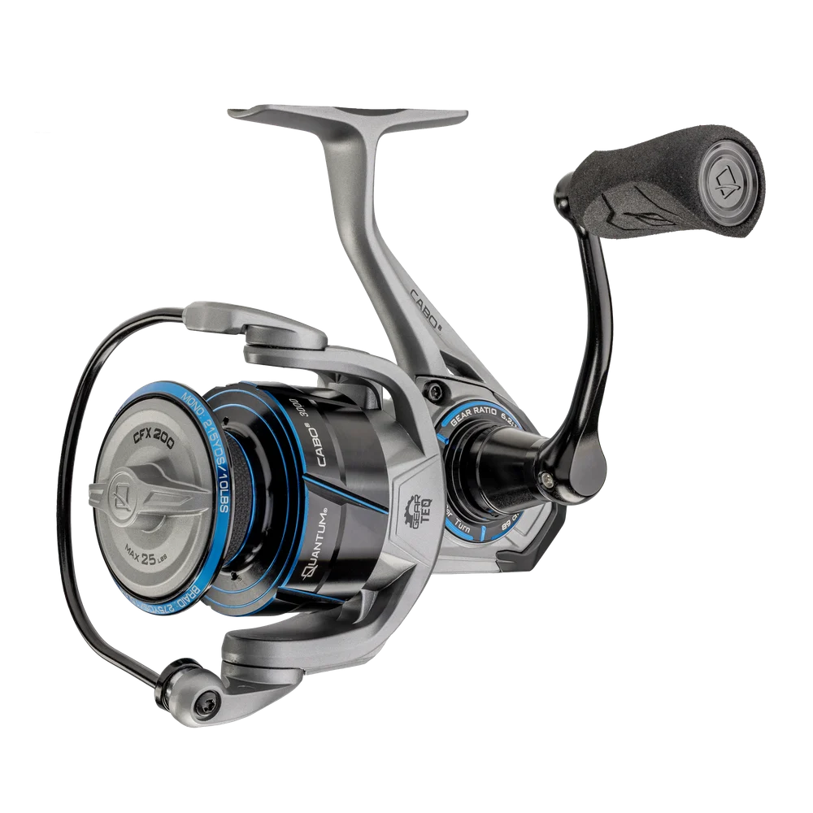

ReelCalc Reel Setup Guide
Quantum Cabo 3000 Line Capacity & Reel Setup Guide
The Quantum Cabo 3000 (CB3000.B2) falls in the 3000-size class and is best matched to sealed saltwater, inshore, surf, and offshore. 10.6 oz, 35 inches of line pickup per handle turn, and 25 lb of published maximum drag define the working scale of this exact model. At 10.6 oz, this is deliberately a power-and-capacity reel rather than a light-tackle all-rounder.